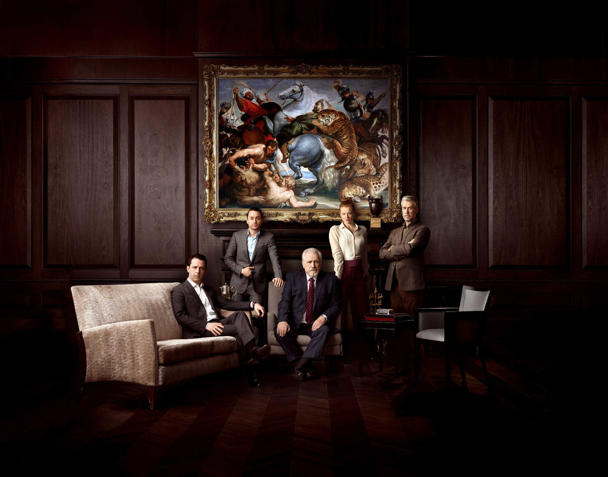
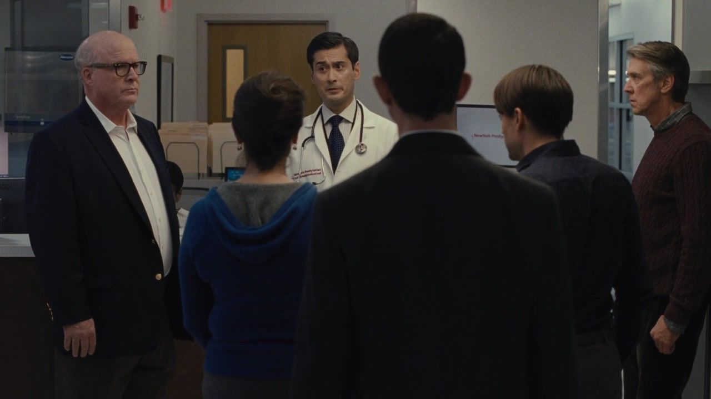
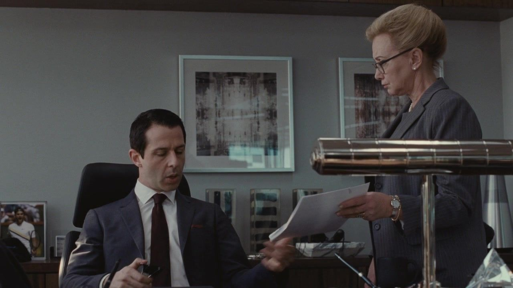
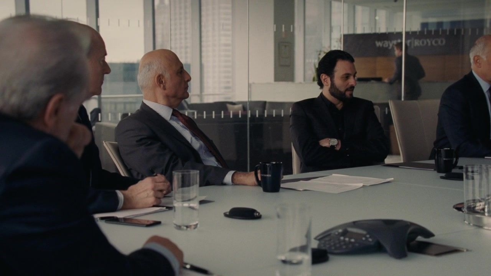
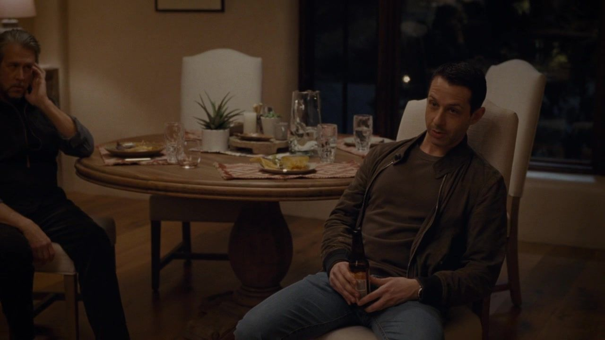
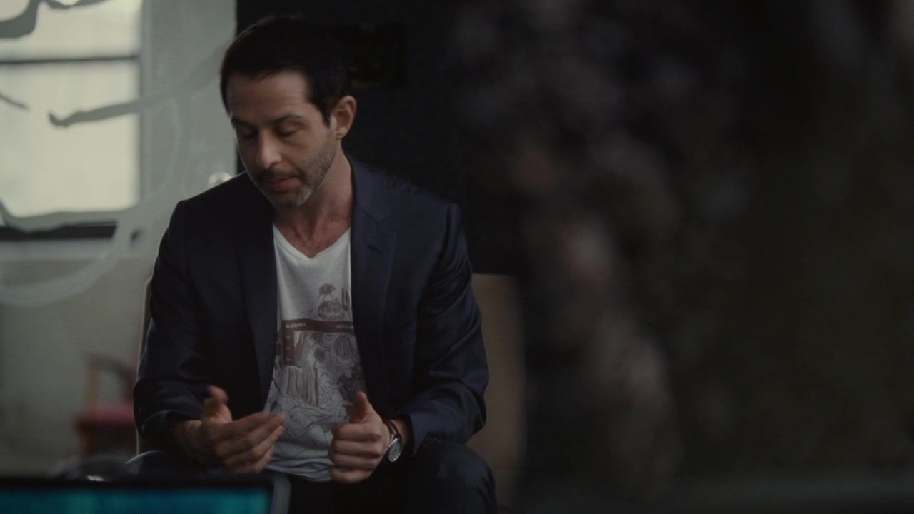
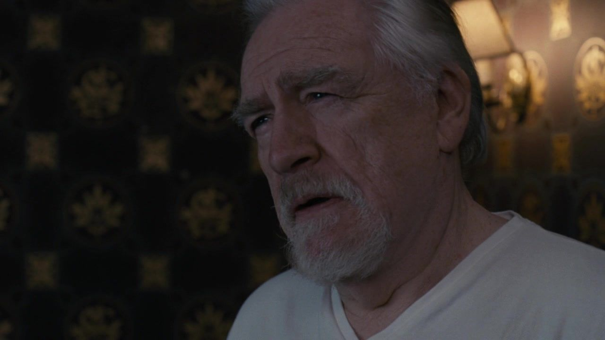

01
01从这里进入罗伊家 / START HERE
S01E01Celebration
他等的是王位，还是父亲的认可？
八十岁生日，本该是一场交接的前奏。肯德尔想把新媒体收购和接班消息放在同一天，证明自己已经准备好；洛根却把子女召到一起，先要求他们交出一部分未来的决定权。午餐还没开始，庆典已经变成考核。首集真正残酷的地方在于：父亲可以随时改变考题，孩子们却仍然盼着从他那里拿到及格。
接班 / 信托 / 生日
办公室：洛根到访，要求肯德尔处理信托文件；非签字动作的瞬间。｜HBO · 本集截图

THE ROY FAMILY / 第一季 · 十集完整档案
一家人的爱与权力，
为什么总是同一场争夺？
他们可以继承一切。
除了父亲那句，从未真正兑现的认可。
从八十岁生日，到一场英国婚礼。
HBO · 第一季家族宣传照，非正片截图 · 图片来源 ↗THE EPISODES / 01—10
从具体场景出发，读懂人物想要什么、手中握着什么，
以及每一次选择，为什么会变成下一场冲突。
阅读范围目录完整展示十集剧照与导读，涉及对应剧情。单篇剧透截至该集，不涉及第二季。单集在新标签页打开 ↗
THE VACANCY / EPISODES 01—03
身体危机让接班从想象变成争夺；救援资本，也带来新的代价。
01从这里进入罗伊家 / START HERE
S01E01Celebration
八十岁生日，本该是一场交接的前奏。肯德尔想把新媒体收购和接班消息放在同一天，证明自己已经准备好；洛根却把子女召到一起，先要求他们交出一部分未来的决定权。午餐还没开始，庆典已经变成考核。首集真正残酷的地方在于：父亲可以随时改变考题，孩子们却仍然盼着从他那里拿到及格。
接班 / 信托 / 生日
办公室：洛根到访，要求肯德尔处理信托文件；非签字动作的瞬间。｜HBO · 本集截图

02S01E02Shit Show at the Fuck Factory
医院的等待室变成临时会议室。谁掌权、谁签字、谁能靠近病床，都被迫在父亲沉默时作出决定。
病床 / 授权 / 债务
家属与高管在医院讨论领导安排。｜HBO · 本集截图

03S01E03Lifeboats
肯德尔接手债务危机，用老朋友的资本换取喘息空间。公司暂时得救，但他是否看清了救援者站在哪一边？
融资 / 旧友 / 控制权
杰丽向肯德尔说明公司债务与条款。｜HBO · 本集截图
THE REBELLION / EPISODES 04—07
公开复位、家宴与董事会，把公司分歧推进到家庭旧伤。
 04
04S01E04Sad Sack Wasp Trap
洛根急于公开复位，汤姆却在新职位上接到邮轮旧案。慈善、致辞与公关把家族聚到一起，也把风险向下传递。
复位 / 邮轮 / 公关
洛根在慈善晚宴的台上致辞。｜HBO · 本集截图
 05
05S01E05I Went to Market
感恩节的团聚让经营分歧变成家庭伤害。伊万的忠诚、格雷格留下的文件和孩子遭遇的一击，分别改变了下一步的筹码。
家宴 / 文件 / 忠诚
家宴餐桌旁的希芙与罗曼。｜HBO · 本集截图

06S01E06Which Side Are You On?
肯德尔筹齐反对父亲的支持，却无法按时回到董事会。程序、地理与恐惧叠在一起，私下联盟在洛根面前发生改变。
拉票 / 程序 / 恐惧
董事会中伊万、弗兰克与斯图伊等人的同场画面。｜HBO · 本集截图

07S01E07Austerlitz
牧场上的家庭治疗带着修复形象的目的。肯德尔的复吸、希芙的政治选择与父亲的旧伤，让表面的和解越来越难维持。
治疗 / 复吸 / 旧伤
肯德尔与洛根在牧场夜间争吵。｜HBO · 本集截图
THE RETURN / EPISODES 08—10
单身派对与英国婚礼，让收购、亲密关系和秘密正面相撞。

08S01E08Prague
一次改在纽约的单身派对，混合了欲望、童年旧事与资本谈判。肯德尔得到退出家族公司的机会，却提出另一条更激烈的路。
童年 / 派对 / 收购
肯德尔向创意项目推介自己的画面。｜HBO · 本集截图
 09
09S01E09Pre-Nuptial
婚前聚会让秘密、母亲的尖刻与政治交易同时到场。希芙以邮轮旧案谈条件，肯德尔则发现收购时间已不能由自己决定。
婚约 / 政治 / 时间
英国城堡的本集结尾外景；船上兄妹互动与收购谈话另见正文。｜HBO · 本集截图

10S01E10Nobody Is Ever Missing
正式收购要约与婚礼同日发生。肯德尔一度准备越过父亲，夜间事故却使他重新依赖父亲的保护与叙述。
要约 / 事故 / 依赖
洛根接到肯德尔正式收购要约后的反应。｜HBO · 本集截图
BENEATH THE ARGUMENT
剧情说明发生了什么，
人物冲突解释为什么难以停下。以下只使用第一集信息；角色照取自首集。
三幕剧情与连续节点，说明一次谈判、一个电话或一次沉默，怎样改变接下来的局面。
分阶段追踪人物目标、筹码与退路。私下的支持，不会被直接当作已经发生的行动。
短台词、画面呼应与冲突深读，区分剧情事实、个人解读和截至本集仍未揭示的信息。
封面为 HBO · 第一季家族宣传照，非正片截图；人物和构图属于宣传设计，不作为具体剧情场面的证据。图源为 Espinof 2018 年首播剧评，查看原图 ↗。各集卡片均使用对应集的正片截图，具体场景说明见图下注；原始图片、转录与资料出处列于各篇末尾。
人物导读属于个人解读，只使用第一集信息。英文台词均核对原文，中文注明自译。首集人物、演员及图片档案 ↗